Construção de casas
Transformamos ideias em residências exclusivas, unindo sofisticação, qualidade e atenção aos mínimos detalhes.
Casas de alto padrão, reformas e administração de obras com prazo cumprido, transparência em cada etapa e acabamento que dura. Do projeto à entrega das chaves.
→Solicitar orçamentoConstruir obras de alto padrão com excelência, responsabilidade e compromisso, entregando confiança e valor duradouro para cada cliente.
Entregar no prazo, com qualidade, inovação e trabalho em equipe.
Atenção, Lealdade, Qualidade, Responsabilidade e Comprometimento, Organização e Valor Duradouro.
Quem somos
Localizada na deslumbrante região de Trancoso, na Bahia, a Construforte Construtora é uma empresa dedicada à excelência na construção civil. Fundada com a missão de realizar os sonhos de nossos clientes, combinamos expertise técnica com uma abordagem personalizada para cada projeto.
Nossa equipe é composta por profissionais altamente qualificados, comprometidos em oferecer soluções inovadoras e sustentáveis para cada empreendimento. Desde a concepção até a conclusão, buscamos superar as expectativas, garantindo qualidade, pontualidade e transparência em todas as etapas.
Nosso compromisso com a qualidade se estende além da construção, abraçando também a preservação do meio ambiente e o desenvolvimento da comunidade local. Com uma visão de longo prazo, buscamos deixar um legado positivo em cada projeto que realizamos.
→Ver nossos projetos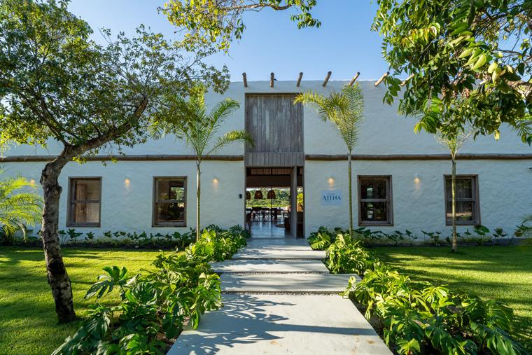
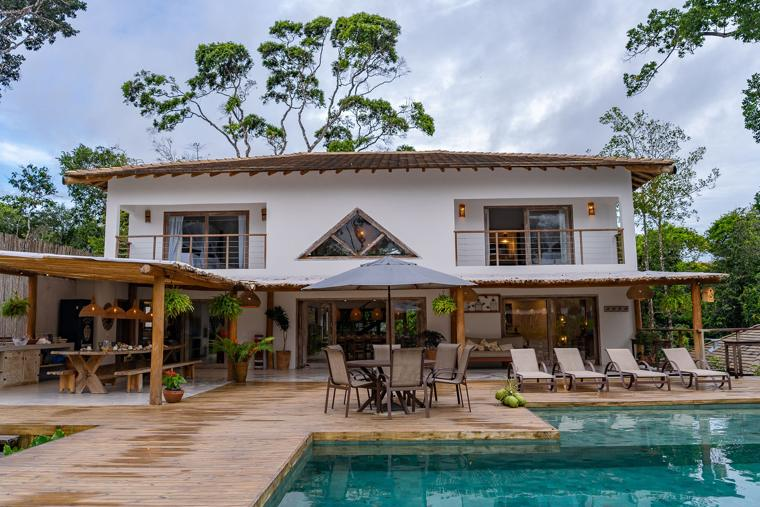
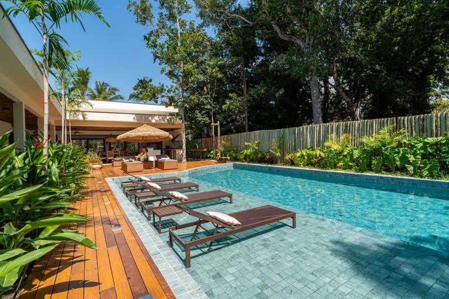
Nossos serviços
Transformamos ideias em residências exclusivas, unindo sofisticação, qualidade e atenção aos mínimos detalhes.
Reimaginamos espaços com criatividade e precisão, alinhando conforto e funcionalidade às suas necessidades.
Gerenciamos cada etapa com eficiência e transparência: prazos cumpridos, custos controlados e resultado impecável.
Soluções técnicas integradas, como elétrica, hidráulica e estrutura, para harmonia e funcionalidade em todo o projeto.
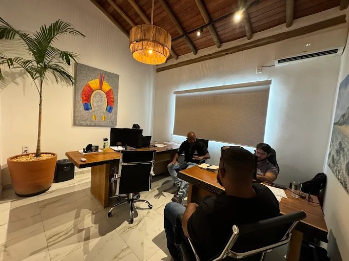
Sobre nós
Na Construforte, nos especializamos na construção de casas de alto padrão em Trancoso e todo o extremo sul baiano. Com uma equipe altamente qualificada e serviços de excelência, estamos prontos para realizar o seu projeto com qualidade, inovação e atenção aos detalhes.
Venha conhecer nosso trabalho e descubra como podemos tornar a casa dos seus sonhos uma realidade espetacular!
Nosso processo
Da primeira conversa à entrega das chaves, você sabe em que etapa está, quanto foi investido e o que vem a seguir.
Entendemos seu terreno, seu estilo e suas expectativas para propor o melhor caminho.
Cronograma, escopo e custos detalhados, sem pressão e sem surpresas no meio da obra.
Equipe qualificada, obra organizada, acompanhamento próximo e suporte após a entrega.
Nossos projetos
Cada obra é única. Clique em um projeto para ver a galeria completa.
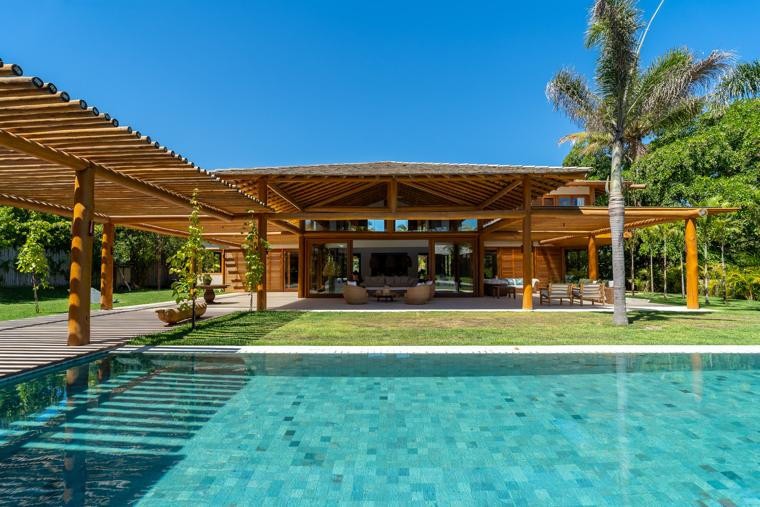
CONDOMÍNIO PEDRO GRANDE Vila Jagu Ver galeria · 12 fotos →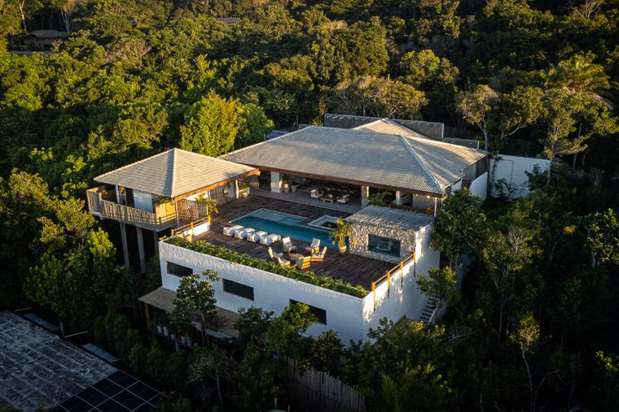
PIRI · TRANCOSO Casa Atena Ver galeria · 18 fotos →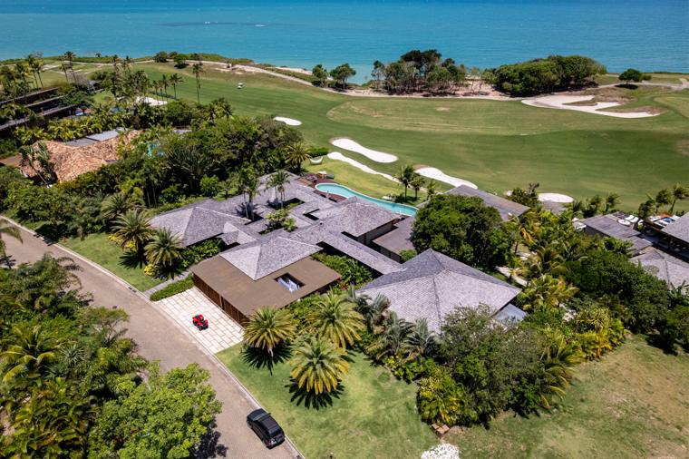
TERRAVISTA · TRANCOSO Casa CQ Ver galeria · 19 fotos →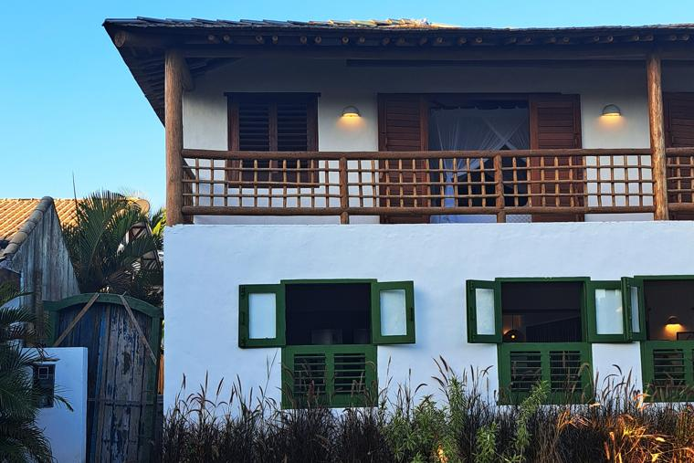
OUTEIRO DAS BRISAS Casa F Ver galeria · 4 fotos →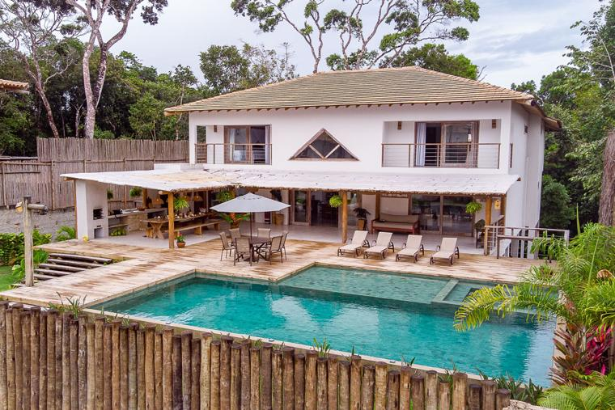
CONDOMÍNIO COQUEIRAL Casa Verbena Ver galeria · 10 fotos →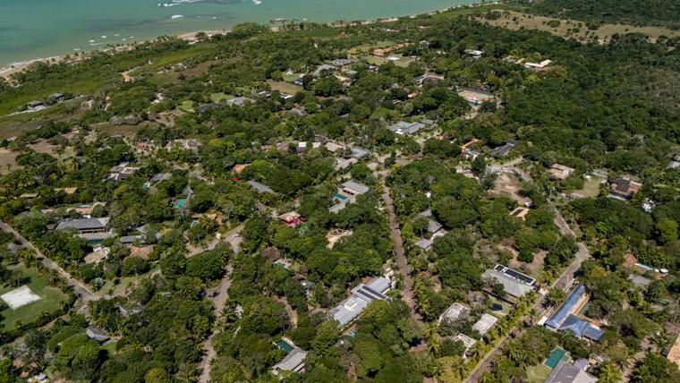
ALTOS DE TRANCOSO Villa di Maria Ver galeria · 17 fotos →Construindo o futuro
do seu jeito
CONSTRUÇÃO DE ALTO PADRÃO COM CONFIANÇA
Contato
Conte alguns detalhes e retornamos pelo WhatsApp com os próximos passos para o seu orçamento.
Depoimentos
Experiências reais, obras entregues com qualidade.
“Tivemos uma ótima experiência com a Construforte que nos entregou uma obra de alto padrão no sul da Bahia.”
“A Construforte foi indicada para a realização de uma obra na minha casa e hoje, após vários trabalhos juntos, conto com o trabalho deles para todas as obras e manutenções que precisamos. Além de um time de frente muito competente, são extremamente organizados e transparentes.”
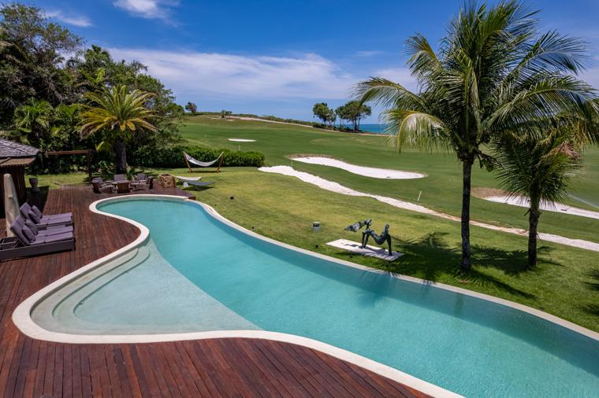
“Preciso destacar o serviço de manutenção e cuidado após a finalização da obra.”
“A reforma com a equipe da Construforte seguiu bem e dentro do prazo. Os serviços entregues foram realizados com a qualidade que esperávamos. O preço pago foi adequado e cuidaram bem até a fase de acabamentos. Recomendo o serviço deles!”
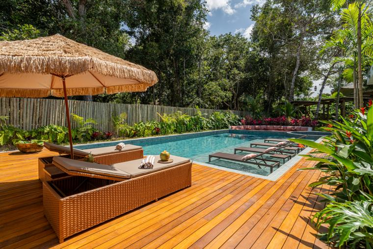
“Contratamos a Construforte para a construção da minha casa em Trancoso. Empresa responsável e seus diretores sempre acessíveis. A construção ocorreu no prazo estipulado e com muito profissionalismo. Claro que problemas apareceram, porém foram sanados da melhor forma possível. A casa está pronta, e estamos muito felizes com o resultado final.”
Dúvidas
As respostas mais comuns sobre como trabalhamos.
Conversamos sobre o seu projeto e apresentamos escopo, cronograma e custos de forma clara, sem pressão. Chame no WhatsApp para começar.
Atuamos na construção, nas reformas e na administração da obra, além de projetos complementares de elétrica, hidráulica e estrutura.
Sim. Gerenciamos cada etapa com foco em prazo, controle de custos e transparência, mesmo quando o projeto já está pronto.
Sim. Nossos clientes destacam o cuidado e a manutenção após a finalização da obra, e esse suporte faz parte do nosso compromisso.
Atuamos em Trancoso e em todo o extremo sul baiano. Fale com a gente para confirmar a localização da sua obra.
Blog
Dicas práticas sobre prazos, materiais, condomínios e manutenção de casas de alto padrão.
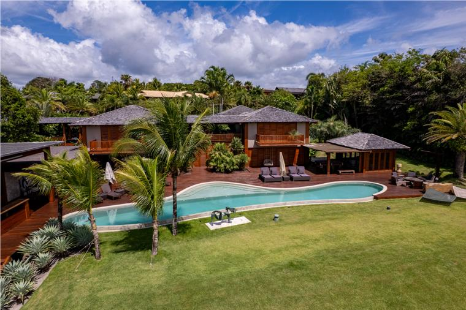
Materiais · 3 min de leituraConstruir casa na praia: como a maresia influencia a escolha dos materiaisSal, umidade e sol intenso exigem decisões diferentes de uma casa de cidade. Veja o que priorizar na obra.Ler artigo →